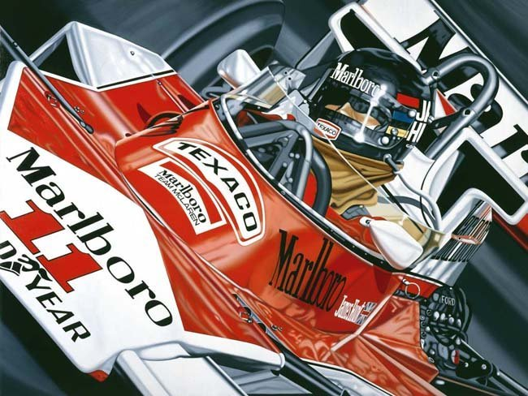

Carrera de película
Hablamos de una cerrera que fue el final de la película "Rush" en el Gran Premio de Japon de 1976. Ese año el trazado no fue el de Suzuka, sino el de Fuji, que vio una espectacular carrera bajo una lluvia que decidio el titulo de ese año entre James Hunt y Niki Lauda.
Para que entendais el conexto de la cerrara, en 1976, la rivalidad entre James Hunt, de McLaren, y Niki Lauda, de Ferrari, estaba en su punto máximo. La temporada fue intensamente competitiva, pero un acontecimiento trágico marcó un punto de inflexión. En el Gran Premio de Alemania en Nürburgring, Lauda sufrió un grave accidente que lo dejó con quemaduras graves y en estado crítico. A pesar de esto, Hunt continuó compitiendo en las siguientes carreras descontanto puntos al austriaco en la tabla de pilotos.
El Gran Premio de Japón se llevó a cabo en condiciones climáticas extremas, con lluvia intensa y niebla. Lauda, todavía en proceso de recuperación de sus lesiones, decidió retirarse de la carrera debido a las peligrosas condiciones. Esto significaba que Hunt tenía una oportunidad para ganar el campeonato si terminaba en al menos tercer lugar. Pero el inicio de la cerrera no fue el mejor teniendo que entrar varias veces a boxes a cambiar neumáticos en las primeras vueltas.
En las últimas vueltas de la carrera, Hunt logró adelantar a Jochen Mass y asegurar el tercer lugar, lo que le valió los puntos necesarios para ganar el campeonato mundial de 1976 superando a Niki Lauda por solo un punto en una temporada.
